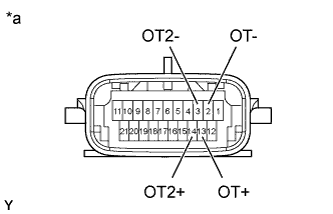

TRANSMISSION WIRE > INSPECTION |
| 1. INSPECT TRANSMISSION WIRE (ATF TEMPERATURE SENSOR) |
|  |
Measure the resistance according to the value(s) in the table below.
| Tester Connection | ATF Temperature | Specified Condition |
| 2 (OT-) - 13 (OT+) | 10°C (50°F) | 5 to 8 kΩ |
| 2 (OT-) - 13 (OT+) | 25°C (77°F) | 2.5 to 4.5 kΩ |
| 2 (OT-) - 13 (OT+) | 110°C (230°F) | 0.22 to 0.28 kΩ |
| 3 (OT2-) - 14 (OT2+) | 10°C (50°F) | 5 to 8 kΩ |
| 3 (OT2-) - 14 (OT2+) | 25°C (77°F) | 2.5 to 4.5 kΩ |
| 3 (OT2-) - 14 (OT2+) | 110°C (230°F) | 0.22 to 0.28 kΩ |
| *a | Component without harness connected (Transmission Wire) |